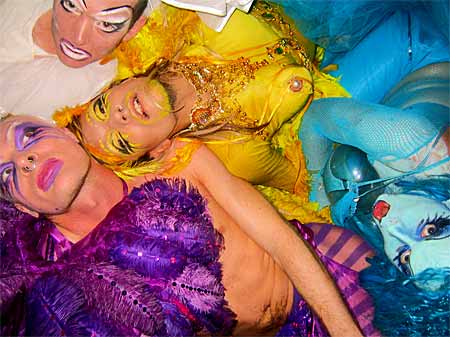

| dunst recommends this event | 2. September 2004 |
 |
|
| "The act" Maskebal på KUPÉ Århus Vildt maskebal afholdes af det Københavnske event klubkoncept ”THE ACT” på KUPÉ i Festugen i Århus. Fire trash drags fra dunst Miss Fish i hvidt, Hairwerk i gul, Johnny Warehouse i Lilla, Dennis Agerblad i turkis Rollergirls i cheerleader outfit, funky DJ’s, superhelte, tryllekunstnere, ublu male/female dansere, en stepdanser med mikrofoner på skoene der danser i takt til musikken, samt et feststemt personale der alle bærer hemmelige Venedig-masker. Det overordnede tema for THE ACT er at skabe et Moulin Rouge/Studio 54 lignende univers, hvor udklædte kunstnere sørger for en underholdning, der i hvert fald ikke vil kede aftenens gæster. THE ACT er et sted, hvor der under festen foregår en række acts og gags. Disse underholdende shows skal betragtes som små fester i festen, hvor klubgængeren vil bevæge fra den ene opsigtsvækkende oplevelse til den anden. Ud over at skabe et Moulin Rouge univers med masker, fjer, puf og gejl handler THE ACT også om at glemme hvem man er, og for én aften slå fuldstændig løs og feste og danse – gerne iført maske, udklædt som supermand, postbud, eller hvad man nu har lyst til. Et extravaganca af farver og indtryk. Kl: 22 Pris: 80,- Sted: KUPÉ, TOLDBODGADE 6, Århus. Ved spillestedet Train. www.kupelounge.dk |
|